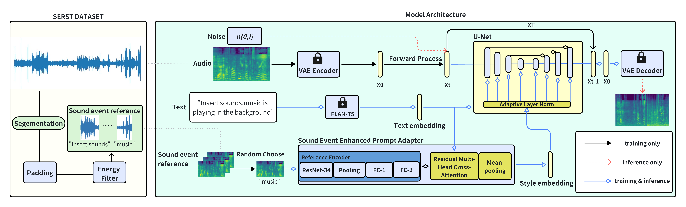

Text Prompt is Not Enough: Sound Event Enhanced
Prompt Adapter for Target Style Audio Generation
Chenxu Xiong1, Ruibo Fu*2, Shuchen Shi2, Zhengqi Wen3, Jianhua Tao3, Tao Wang2
Chenxing Li4, Chunyu Qiang2, Yuankun Xie2, Xin Qi2, Guanjun Li2, Zizheng Yang1
1SDU-ANU Joint Science College, Shandong University, Weihai, China
2 Institute of Automation, Chinese Academy of Sciences, Beijing, China
3 Department of Automation, Tsinghua University, Beijing, China
4 AI Lab, Tencent, Beijing, China
*Corresponding author
Abstract
Current mainstream audio generation methods primarily rely on simple text prompts, often failing to capture the nuanced details necessary for multi-style audio generation. To address this limitation, the Sound Event Enhanced Prompt Adapter is proposed. Unlike traditional static global style transfer, this method extracts style embedding through cross-attention between text and reference audio for adaptive style control. Adaptive layer normalization is then utilized to enhance the model's capacity to express multiple styles. Additionally, the Sound Event Reference Style Transfer Dataset (SERST) is introduced for the proposed target style audio generation task, enabling dual-prompt audio generation using both text and audio references. Experimental results demonstrate the robustness of the model, achieving state-of-the-art Fréchet Distance of 26.94 and KL Divergence of 1.82, surpassing Tango, AudioLDM, and AudioGen. Furthermore, the generated audio shows high similarity to its corresponding audio reference.

Figure 1: SEARST Dataset and Model Architecture: In the training stage, the latent diffusion model (LDM) is conditioned on an audio embedding learned in a continuous space through a variational auto-encoder (VAE). Text is fused with a randomly selected sound event reference through the Sound Event Enhanced Prompt Adapter to generate a style embedding. This style embedding is then utilized for adaptive layer normalization in the U-Net. In the inference stage, the LDM is conditioned on random noise instead of the audio embedding derived from the VAE.
Demos
"Water tap, faucet"
| Tango | Ours | Sound Event |
"Animals and dogs are barking in the background."
| Tango | Ours | Sound Event |
"Speech,Electric shaver, electric razor"
| Tango | Ours | Sound Event |